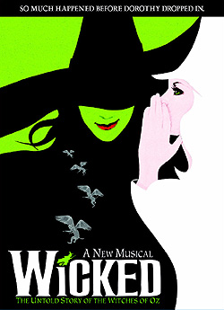

The Wonderful Wizard of Oz Website, in association with Tickco.com, is pleased to offer a 10% discount on tickets to Wicked at the Gershwin Theatre on Broadway, and many of the stops on its current tour.How to Receive the Discount:
1. Shop for Wicked tickets at Tickco.com, or by calling 800-279-4444.
2. Enter "dearoldshiz" as a promotion code during checkout process to receive the 10% discount. The discount will not show up during the checkout process but will be applied when the order is processed. Or give the code words "Dear Old Shiz" when you call. That's it! This offer is open to all visitors to The Wonderful Wizard of Oz Website.
About Tickco:
Because Tickco.com offers premium event tickets, their tickets are often sold at a price greater than the face value. With over 100,000 satisfied customers they have established themselves as one of the largest ticket brokers in the USA. They not only sell tickets for the theater, but also sports tickets, concert tickets, and Las Vegas tickets.
Disclaimer:
All ticket sales are handled by Tickco.com. For all matters related to ticket sale, contact Tickco.com directly. The Wonderful Wizard of Oz Website assumes no responsibility related to ticketing.